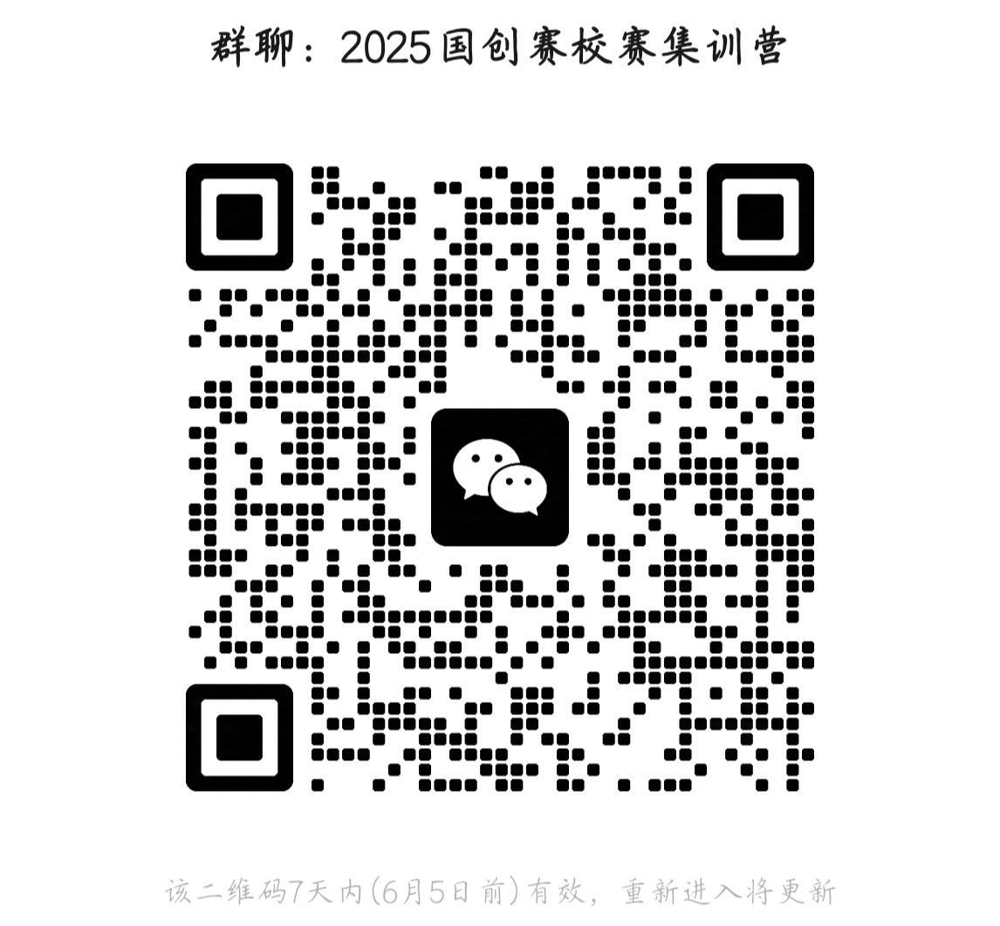

教务处 · 教学通知
中国国际大学生创新大赛（2025）四川大学校赛入围赛结果公示及“不服来辩”复活赛安排通知
发布时间：2025-05-29
各学院（系）及各位同学： 一、入围赛结果公示 经过 5 月 29 日校赛入围赛精彩答辩，校内外专家评审，共 53 支参赛团队直接取得集训营资格并晋级 6 月 10 日举行的校金争夺赛。现将入围赛结果予以公示（详见附件），公示时间为 202 5 年 5 月 29 日 -6 月 3 日。如有异议请及时反映，电话： 85400031 ，邮箱 cxcy@scu.edu.cn 。 直接晋级校金争夺赛的团队 请指派一名成员微信 扫码进入校赛集训营（图 1 ） ， 负责接收相关通知并转告团队 。 图 1. 2025国创赛校赛 集训营二维码 二、 “不服来辩”复活赛安排 1 .根据《中国国际大学生创新大赛（2025）四川大学校赛网评结果公布及入围赛答辩通知》，没有直接获得参加集训营资格的项目均可自愿报名参加6月3日的“不服来辩”复活赛（二维码见图2），继续争夺晋级校金资格。没有获得银奖资格的项目（含网评未过项目）亦可报名参加复活 赛 ，但需上传项目指导老师签名的推荐书。 拟授银奖的项目若未能复活 或复活后未能 校金争夺赛上夺金，将终授银奖；入围赛成绩及格但没有晋级银奖的项目若未能复活 或复活后未能 夺金，将终授铜奖 ；入围赛成绩不及格和网评未通过项目只有复活且夺金 后 方可表彰。复活赛将有 20-25% 的项目有机会复活成功，扫码报名截止时间为 6 月 3 日 12:00 ，名额有限，先到先得。 图 2 . 不服来辩报名二维码 2. 时间和地点。 “ 不服来辩 ” 复活赛时间为 6 月 3 日（周 二 ） 14: 0 0- 18 :00 ， 提前 10分钟签到， 签到地点为四川大学望江校区基础教学楼 A305。 3. 请自备电脑展示 PPT （路演 8 分钟、提问和回答 12 分钟左右） ， 鼓励指导教师参加面谈。 4. 待 “不服来辩”活动结束后，统一公布进入校赛集训营的名单。6 月 3日（周二）20：00将在腾讯会议（ 腾讯会议号： 376-960-129 ）上举行校赛集训营开营仪式， 6月10日将举行最终的校金争夺赛（含产业赛道），请提前做好现场答辩准备。 教务处 202 5 年 5 月 29 日
